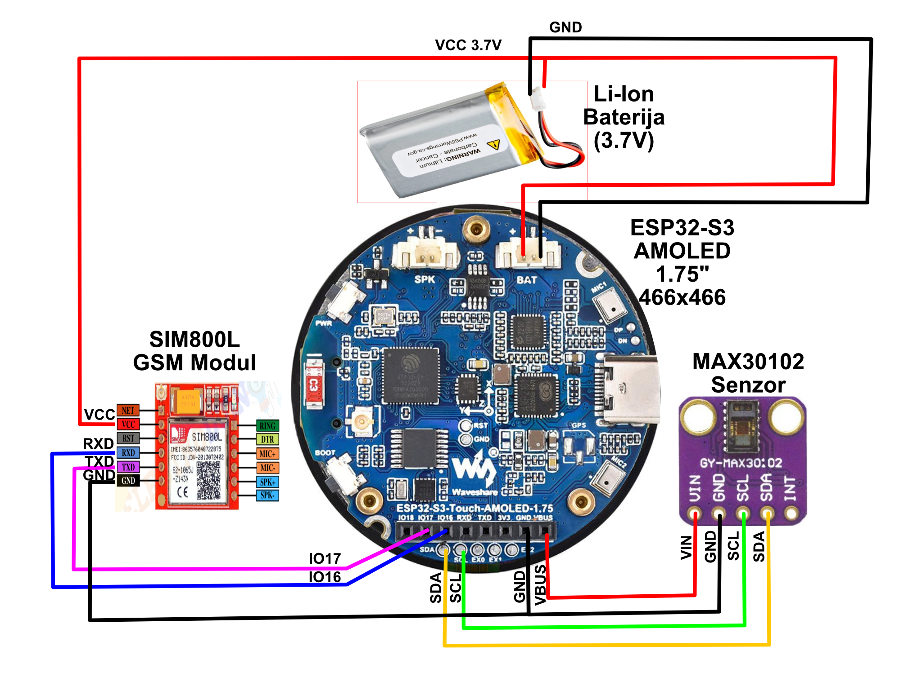

Technical Documentation - LifeLink [ESP32-S3]
This document focuses on the internal mechanics of the LifeLink smart bracelet. It covers sensor structures, network stacks, I2C bus communication, and asynchronous task management in FreeRTOS.
Firmware source code: GitHub: LifeLink_ESP32App
System Architecture & Resource Management (FreeRTOS)
At the heart of LifeLink is the powerful dual-core ESP32-S3 controller. Operations are divided using built-in FreeRTOS to maintain a fluid user interface while background tasks perform critical body scanning for vulnerable patients and elderly users.
Task Allocation (Core/Task):
app_main: System entry point, hardware init, and sub-system startup.
void app_main(void) {
i2c_init(); // Bus I2C initialization
ble_spp_server_init(); // Bluetooth startup
ui_init(); // LVGL GUI initialization
xTaskCreate(read_sensor_data, "sensor_read_task", 4096, NULL, 10, NULL);
}sensor_read_task: Sync with QMI8658 IMU and real-time fall detection logic.
void read_sensor_data(void *arg) {
while (1) {
if (qmi.getDataReady()) {
qmi.getAccelerometer(acc.x, acc.y, acc.z);
// Fall Detection State Machine...
}
vTaskDelay(pdMS_TO_TICKS(10));
}
}MAX30102: Asynchronous health tracking (BPM & SpO2) using FIFO buffers and FFT.
while (max30102.available()) {
redBuffer[i] = max30102.getRed();
irBuffer[i] = max30102.getIR();
if (full) fft_process(red, ir, 100, &hr, &spo2);
}gsm_task: Network monitoring and auto-recovery for the SIM800L module.
void gsm_status_task(void *arg) {
while (1) {
if (gsm_check_network() != ESP_OK) {
gsm_a6_init(); // Re-init on network loss
}
vTaskDelay(pdMS_TO_TICKS(10000));
}
}ble_spp_server_task: NimBLE stack for Flutter app communication.
void ble_spp_server_host_task(void *param) {
nimble_port_run(); // NimBLE stack main loop
nimble_port_freertos_deinit();
}Hardware Interrupts & I2C (Known Issues)
The known "Interrupt Watchdog (WDT)" module crash is resolved by using the newer driver/i2c_master.h iteration and introducing Mutex/Semaphores for hardware resource sharing.
Fall Detection Logic (QMI8658 Advanced Logic)
Fall detection is divided into 3 state-machine phases:
- FREE_FALL: System detects a total loss of gravity (0 - 0.6G).
- IMPACT_DETECTED: Triggered once G-force exceeds the defined threshold (> 3.5G).
- STILLNESS & ANGLE CHECK: Must conclude with a stillness condition for at least 5 seconds and an orientation change > 60 degrees.
Communication & SOS Reporting (SIM800L & GPS LC76G)
Upon a verified fall, the system deliveries a pre-formatted URL (Google Maps link) and vital analytics via the hardware SIM800L GSM module.
Hardware Stack
- MCU: ESP32-S3
- Cellular: SIM800L GSM (AT Commands, 3.7V)
- IMU Sensors: QMI8658 (Motion & Tilt)
- Health Sensors: MAX30102 (Heart Rate & SpO2)
- Power Management: AXP2101
Hardware Schematic

Power Management & Display (AXP2101 & AMOLED)
LifeLink utilizes a sophisticated power management system to ensure maximum battery life and system stability.
AXP2101 PMIC: A smart power controller managing voltages for the ESP32 and peripherals.
- ALDO1 (3.3V): Powers main sensors and logic components.
- ALDO2 (1.8V): Dedicated power for the AMOLED digital interface.
- Boot-Loop Protection: Register
0x10bit 1 (PWROFF) is cleared at startup to prevent the hardware from shutting down after 1s (critical fix for Waveshare boards). - Charging: Configured for 500mA with a 4.2V target voltage for Li-Po batteries.
AMOLED Power Optimization: AMOLED screens consume power only for active pixels.
// Energy saving logic
void reset_screen_timer() {
if (!screen_is_on) {
esp_lcd_panel_disp_on_off(panel_handle, true); // Wake up
ESP_LOGI("PWR", "Screen WAKE");
}
last_touch_time = esp_timer_get_time() / 1000;
}Software Timeout: After 15 seconds of inactivity, the system calls esp_lcd_panel_disp_on_off(panel_handle, false), turning off all pixels to minimize draw while background tasks remain active.
TCA9554 IO Expander: A secondary chip at 0x20 that physically controls the Screen EN (Enable) pins.
// P2 pin on TCA9554 controls LCD_VCC_EN
uint8_t tca_val[] = {0x01, 0x27}; // Sets P0, P1, P2 High
i2c_master_write_to_device(I2C_NUM, TCA9554_ADDR, tca_val, 2, timeout);Companion Mobile Application (Flutter)
LifeLink includes a dedicated cross-platform application built with **Flutter**, serving as the primary interface for caregivers and medical staff. The source code is available at: GitHub: LifeLink_MobileApp
BLE Communication Protocol: The app utilizes the flutter_blue_plus library for low-energy Bluetooth data exchange.
- Service UUID:
4fafc201-1fb5-459e-8fcc-c5c9c331914b - Characteristic UUID:
beb5483e-36e1-4688-b7f5-ea07361b26a8 - Subscription Model: The app subscribes to characteristic notifications, enabling real-time data streaming from the hardware without excessive polling.
BleService Architecture: Implemented as a Singleton service for robust connection management.
// BleService (Flutter) subscription logic
await targetCharacteristic.setNotifyValue(true);
targetCharacteristic.onValueReceived.listen((value) {
// Parsing bytes into vital signs data
_dataController.add(value);
});Core Features:
- Live Dashboard: Visual representation of Heart Rate and SpO2 levels received directly from the bracelet.
- Alarm Mirroring: Upon fall detection, the phone triggers a high-priority sound alert and displays the user's location on a map.
- Contact Management: Remote configuration of SOS telephone numbers via the BLE channel.
References
- ESP-IDF Programming Guide - Official documentation for ESP32-S3.
- FreeRTOS API Reference - Mutex/Semaphore usage documentation.
- LVGL Documentation - Graphical library interactions.
- QMI8658 & MAX30102 Datasheets - Sensor hardware specifications.
- SIM800L AT Commands - GSM modem control.
- AXP2101 Datasheet - Power and charging management.